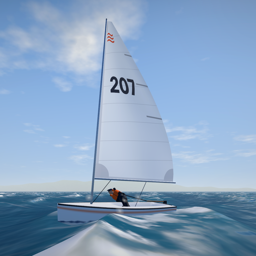

Tiller & SheetPrivacy Policy
Effective date: November 12, 2026
The short version
Tiller & Sheet has no accounts, no analytics and no advertising. Its small server keeps only two things: the daily regatta board (the name you race under, your time and your boat’s track, for a week) and, if you turn on race alerts, your phone’s notification token. Neither is linked to your identity, sold or shared.
What is stored on your device
Your settings, your best times, your rating and season points. Deleting the app removes them.
Game Center
If you are signed in to Apple’s Game Center, the app posts your scores to its leaderboards, where they appear next to your Game Center nickname. In an online race the phones in the race exchange, through Game Center, your nickname, boat colour, rating and what your boat is doing; nothing is kept afterwards. Game Center is run by Apple under Apple’s privacy policy, and you can sign out of it in your device’s Settings. The game is fully playable without it, except online races.
The daily regatta
When you finish the daily regatta, the app sends our server the name you race under (your Game Center nickname, or the name set in the app), your finishing time, your boat’s recorded track and a random ID made on your phone so the board can keep your best run. Other players see your name and time on the day’s board and may race against your track as a “ghost”. Runs are deleted after eight days. The random ID is not linked to your Apple ID, Game Center account or device.
Race alerts and notifications
If you allow notifications and turn on race alerts, the app sends our server your phone’s Apple push token and its time-zone offset, so that it can tell you when another player is looking for a race and keep quiet at night. When you look for a race yourself, the server notifies others that someone is looking (no name is sent). Turning race alerts off in Settings deletes the token from the server; tokens of phones not seen for two months are deleted too. Regatta reminders are scheduled on your phone and send nothing.
Analytics, advertising and tracking
None. The app contains no analytics, advertising or tracking code and does not use the App Tracking Transparency framework.
Children
The app does not ask for or collect contact details or other personal information from anyone, including children. The only name it sends is the one shown on the daily board, which you can change.
Changes
If this policy changes, the new version will be posted on this page with a new effective date.